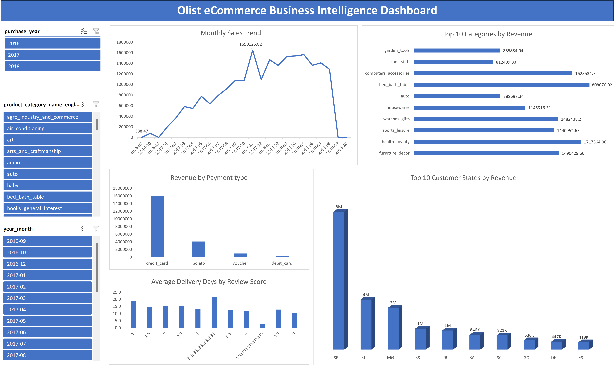

FEATURED PROJECTS

Sales Performance Dashboard (Power BI)
Dynamic performance data visualization dashboard optimizing transactional monitoring, revenue trends, and operational metrics across international market regions.

Customer Segmentation Analysis (Excel)
Customer segmentation analytics architecture designed as a core component tool to test raw transactional data patterns and identify targeted demographics.

E-commerce Database Analytics (SQL)
Visual optimization analytics framework querying core transactions and customer logs to aggregate relational pipeline performance case study models.

Inventory Optimization (Power BI)
Power BI distribution analytics tracking supply-side material data parameters and resource logistics variations across factory asset ecosystems.